Back in the day, the frontiersman of BTW only had word-of-mouth lore, grit, determination, and a little file called "how to beat BTW.txt" to guide them through the game. This page that you are reading right now, how-to-beat-BTW.html, is the evolution of that concept!
Without spoiling the game, this page serves as a basic recipe guide for the various crafting recipes you will need to beat Better Than Wolves. The recipes are presented in a somewhat chronological list, with the most important survival recipes up front and the more complex recipes closer to the bottom.
The advice offered here is not exhaustive--it serves ,mainly to highlight the most important information you need to get started. The guide concludes with crafting a windmill, pictured above. For a more robust guide with all the latest secrets, tips, and tricks, see the [REDACTED] page.
Table of Contents
(Not sure where to start? Use ctrl+f to search for specific items, or select one of the headings below)
First Recipes Blocks and Slabs Primitive Weapons Firemaking and Cooking Stone Tools Making an Oven Fishing Knitting and Basket Weaving Crafting Table.. Stump? The Iron Age Farming Hemp Mechanical Power Diamonds~ First Recipes ~

"IT'S MINECRAFT. PUNCH A TREE"
- Coder67
... keep punching
You got a stick! (in BTW, they are called shafts)
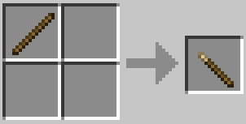Craft the stick into a pointy stick.
Do not bother trying to hit animals with it, the pointy stick isn't for hunting.
(but you can stick shafts into the ground if you want)
Use the pointy stick like a chisel and break a stone loose from some exposed rock.

If you can't find any exposed stone to mine, you may have to dig for it beneath the dirt.
Like punching a tree, chiseling a rock takes a long time. Be patient.
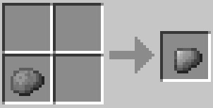Craft your loose stone into a sharp stone.
IMPORTANT!

Don't mine any more loose stones with pointy sticks.
Sharp stones are a direct upgrade over pointy sticks! Use sharp rocks to get more rocks.
It is smart to gather 3 or 4 loose stones right away. Then, use the sharp stones on trees to gather at least 10 sticks.
After you have gathered enough sticks and stones, it is time to hunt.
~ Blocks and Slabs ~
When you break blocks with your hand, they fall apart.
Instead of full blocks, you get back piles.


Dirt piles can be crafted into loose dirt slabs.
Loose dirt slabs can be crafted into full loose dirt blocks.
Loose dirt blocks can be converted back into slabs and piles at your convenience.

Jumping uphill drains a lot of energy. Using slabs to build paths over hills preserves hunger!
 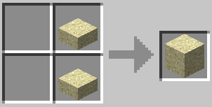
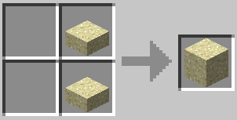

Sand piles can be crafted into loose sand slabs. Loose sand slabs can be crafted into full loose sand blocks. Loose sand blocks can be converted back into slabs and piles at your convenience.
 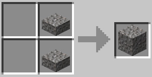
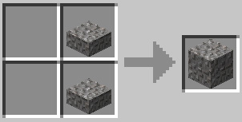


Gravel piles can be crafted into loose gravel slabs. Loose gravel slabs can be crafted into full loose gravel blocks. Loose gravel blocks can be converted back into slabs and piles at your convenience.

 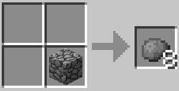
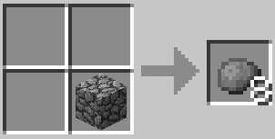
Loose stones can be crafted into loose cobblestone slabs. Loose cobblestone slabs can be crafted into full loose cobblestone blocks. Loose cobblestone blocks can be converted back into slabs and stones at your convenience.

Additionally, you can craft stairs out of cobblestone.
~ Primitive Weapons ~
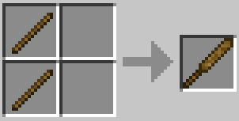The wooden club is good for whacking things.

The bone club is even better at whacking things, but you need bones from skeletons to make it...
Your fists are a decent weapon against animals. But if you try to punch a monster, you will probably die.
(sometimes zombies will spawn holding iron tools...)
~ Firemaking and Cooking ~

You can cook food over the campfire.

The fire plow is the most basic fire starter. Hold right click against the campfire to light it.
It takes a LONG time to start a fire with the plow. More than half the durability will be used up before you get a spark, probably.
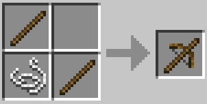A bow drill is much faster, but you need string from a spider to make one...
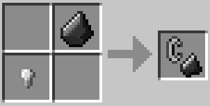The flint and steel can spark up a fire with just a few clicks!
Once you get a fire going, you need to make another pointy stick to use as a spit to roast food with.
Right click the campfire with the pointy stick to apply it. Then, right click the spit with some raw meat to start cooking.
Campfire Stage 1: low fire

The campfire begins at this stage. Add fuel by right-clicking with flammable material, or drop the fuel directly into the campfire.
Food will not cook at this stage.
Campfire Stage 2: medium fire
(perfect!)

Not too hot, not too cold. This is the ideal stage for cooking!
Campfire Stage 3: HUGE fire
This is the largest flame. If you cook over this stage too long, your meat will burn.
Items dropped into it will be incinerated immediately. The huge campfire emits the most light, so it is good for seeing deep into caves.
Dying Campfire: embers

The campfire can be rekindled by adding fuel to it. Otherwise, the embers will fade out and die.
Extinguished Campfire
The campfire is dead. It cannot be re-lit.
You can still store meat over it though!

Cured meat can save you in a pinch. Nitre is... creeper salt? Nobody is quite sure, but cured meat eliminates the risk of illness and is great for traveling.
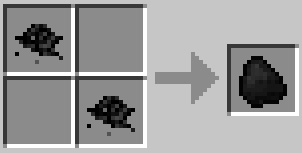Coal dust can be scraped from coal ore with a sharp rock.

Crude torches can be lit by right-clicking them against a fire source. Alternatively, you can light a torch with another torch.
Crude torches only last about twenty (20) minutes, so don't waste them! A full day and a full night.
~ Stone Tools ~
(during the night, spiders will spit webs while hunting chickens)
If you cut cobwebs with a sharp stone, you can harvest string. String is the essential ingredient of stone tools.

The stone axe can be used to harvest logs from trees.
The stone axe is a great weapon. Do not be afraid to use it to defend yourself.
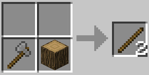Wood logs can be chopped into sticks, sawdust, and bark.

You will have so much fuel from chopping that you could run two, even three, campfires at night and double your food production.

The stone shovel makes digging much faster.
Press ctrl + right click to place tools in their respective materials. Axes into woods, shovels into dirt, sand, and gravel.
Sinew can be crafted by cutting 2 beef with a sharp rock. Sinew can replace string in a variety of recipes.
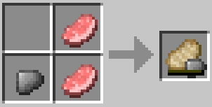Sinew can also be cut from wolf chops.
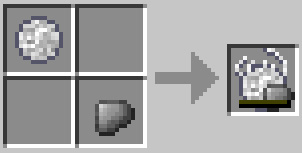If you find a tangled web, you can cut that into string too.
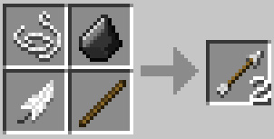You can make arrows with feathers, flint, and string. Skeletons drop bows, but you can't craft your own bow until you get a crafting table.
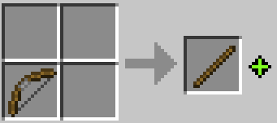Bows can be broken down into a piece of string (and a shaft).
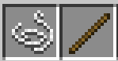You can convert bows into an axe or shovel easily.
~ Making an Oven ~
Camping is fun, but something more permanent would be better.

Clay can be found mixed with dirt in ponds, rivers, and swamps.
(you can dig up clay with your hands, but you will only recieve a pile)

Clay piles combine to make a single ball of clay.
You can make blocks of cobblestone stick or float by applying mortar to them. Right click loose cobblestone with clay or slimeballs to mortar them. Loose cobblestone can be stuck to mortared cobblestones to make them stick temporarily while building. Good masonry!

Wet bricks can be molded from clay balls.
(hope it doesn't rain!)
Place wet bricks under the sun to dry them.

Brick slabs
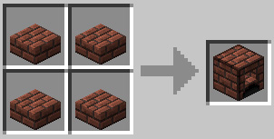Four brick slabs make an oven. 16 bricks per oven.
The top slot of the oven accepts food or ore.
The bottom slot of the oven accepts fuel. It can even take a whole log, which will burn for about 10 minutes and cook many pieces of food.
You can light the fuel on fire by right-clicking the bottom slot with a torch. It can also be ignited with a fire starter like a bow drill or plow.
~ Fishing ~
Fishing is a great pastime and a renewable source of food.
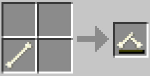Bone carving lets you transform a bone into a fish hook.
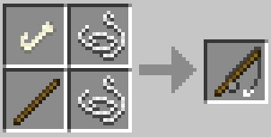A fishing rod is a powerful tool, but it takes planning to use.
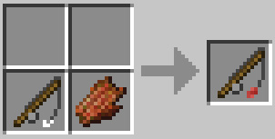The rod must be baited to catch a fish. Rotten flesh, creeper oysters, bat wings, and spider eyes are valid baits.
Best times to fish:
You can't catch fish in caves or shallow ponds. A deep river, or the ocean, will yield fish. Build an elevated dock or enclosed hut to fish safely at night.
~ Knitting and Basket Weaving ~
(were you hoping for a chest?)
Some materials like knit cloth and wicker take bit of effort to craft, but the rewards for performing these activities are unique and highly valued.
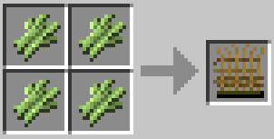Mix sugarcane to begin wicker weaving.
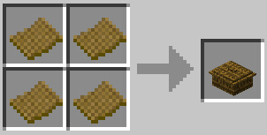A basket can hold items and store them.
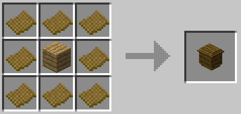Hampers can hold four different items, but they are more expensive than a basket.
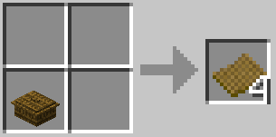It is possible to recycle baskets to get some material back. Saves time!
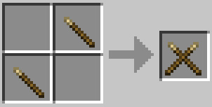Two pointy sticks make knitting needles.
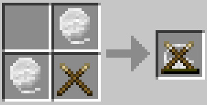Two pieces of wool are required to begin knitting.

Wool armor isn't the strongest, but wool knit is better than being naked.
No, you cannot craft wool boots... because that would just be socks. What else do you want, hot chocolate and a blanky?
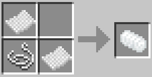You can sleep in the bedroll to pass the night.
~ Crafting Table... Stump? ~
If you want to start crafting for real, you need to smelt iron.

Scrape iron dust from exposed iron ore with a sharp rock. Combine dust to make a chunk of iron ore.

Place the chunk in an oven and bake for 10 minutes to smelt an iron nugget. An oak wood log should do the trick.
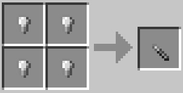The iron chisel allows you to carve a crafting table/workbench from a tree stump. Hence, a crafting stump!
The chisel can mine redstone and diamonds. Might come in handy later.
Hold left click on the stump with the chisel.
Keep going...
Congratulations! Now you can craft more sophisticated tools and blocks.
The stone pickaxe can pulverize solid blocks of stone.
Ladders give you the power to climb vertical surfaces.
The compass points the way back to your original spawn point. If you die and want to navigate home, make a compass.
~ The Iron Age ~
Now that you have a stone pickaxe, you can mine up as much iron as you can find.

Iron ingots let you craft iron tools and other useful hardware.
Iron nuggets can be recycled from ingots and remade at your discretion.
Iron can be fashioned into powerful tools that change the game.
The iron pickaxe blasts through stone and lasts way longer than a stone pick. Iron is hard enough to mine deeper, too.
The iron axe chops wood way faster than a stone axe. It also hits harder and can transform wood into planks.
Wood planks can be chopped from logs with an iron axe. You also get sawdust and bark.

Sail the seas with a boat. Follow rivers to connect distant bases and explore the unknown.
Wood plank slabs are a very efficient building material.
Shears are a versatile tool. You can use them to cut leaves and vines, entice animals with grass cuttings, harvest hemp, castrate creepers, and shape leather.
You can use your shears to snip leather into sheets of cut leather.
Leather armor (boots, helmet, chestplate, and pants) is light yet sturdy. It will save your hide again and again.

The cauldron is very expensive, but it can hold 27 stacks of items. When a fire is lit beneath it, food cooks inside.
~ Farming Hemp ~
The iron hoe lets you till the earth and grow plants. They key to automation lies in agriculture!
Farming hemp is a long term investment into an industrial future. Hemp is a versatile plant whose fibers can be processed into rope and fabric.

Hemp seeds will rarely appear when hoeing grass. Do not bother to hoe bald dirt--only grass blocks will yield seeds.
Wheat, potatos, and carrots can be found in villages far away. Pumpkins can be found in the wilderness. Melon seeds are hidden underground.
Hemp grows two blocks tall.
IMPORTANT!
Hemp can only be harvested with SHEARS. Don't punch hemp or you will uproot the entire plant.
No, you can't smoke it.
~ Mechanical Power ~
(pure capital)
In order to process raw materials into even more sophisticated products, you need heavy machinery and a source of power.
Gears are the basic component within most machines. As such, an iron axe is prerequisite to build mechanically.
The hand crank is a manual source of mechanical power. Right click to operate the mechanism. Be warned: it takes a lot of energy to use.
Stone bricks are mined from blocks of stone with a chisel.
The millstone can grind materials into powders and fibers. Using a hand crank, you can grind by hand.
Initially, you will be grinding hemp into fibers to make ropes and fabrics. Later on, millstones will grind the flour and coal that feeds your entire industrial complex.
Hemp fibers can be used as replacement for string in many recipes.
Rope can be climbed like a ladder. It is also an integral crafting ingredient within all the mechanical contraptions you build.
The anchor can be used to tie off rope for climbing. Rope cannot be placed as a climbable block without an anchor.
Fabric is a material composed of tightly woven fibers.
The sail tames the wind. If you hold a sail while boating, you will traverse the water very quickly. Sailing in a boat may take some getting used to!
At last! The windmill uses the air itself to deliver mechanical power to your devices.
Windmills are huge. They span 13 blocks vertically and horizontally, so placing it up high in a tower or over the side of a cliff will make installation easier.
The windmill must be placed on an axle. VVV
Axles transfer mechanical power. Power can be transfered along three axels in a line before breaking.
To transfer power beyond three axles, or to change the direction of the flow of power, you need a gearbox. VVV
Gearrboxes can extend or redirect the flow of mechanical power.
In order to recieve power, the spinning axle needs to be plugged into the side of the gearbox marked with arrows.
(a windmill attached to axles and gearboxes)
Placing and orienting gearboxes properly can be tricky, but practice makes perfect. Always use an iron axe or stronger to pick up gearboxes and axles.
Redstone latches are a special component of some mechanical blocks.
The gold nuggets required to craft latches makes them quite valuable.
The lever emits a redstone signal when triggered, and it emits nothing when turned off.
Gearbox clutches are a kind of gearbox that can be turned off with redstone.
When a redstone current is applied to a clutch, the mechanism disengages and mechanical power no longer flows through it.
There are a number of practical applications for this, but initially you will find it valuable for disengaging your windmill during storms. Windmills caught in heavy rain will destroy the gearbox attached to it unless it is disengaged.
(notice how the gearboxes behind the clutch aren't working)
The pulley... I wonder what this can do?
A windmill can run as many millstones as your little heart desires, completely free. Puts our modern life into perspective, doesn't it?
~ Diamonds ~
Shining, hidden in the deep places of the world, there are diamonds.
Diamond Ingot
Diamond Pickaxe
Prepare stockpiles of food. Forge the hardest iron tools. Fashion weapons and armor to defend yourself.
Those diamonds are yours for the taking! Breach the depths in search of glory! Dive! Strike the earth! Dive!